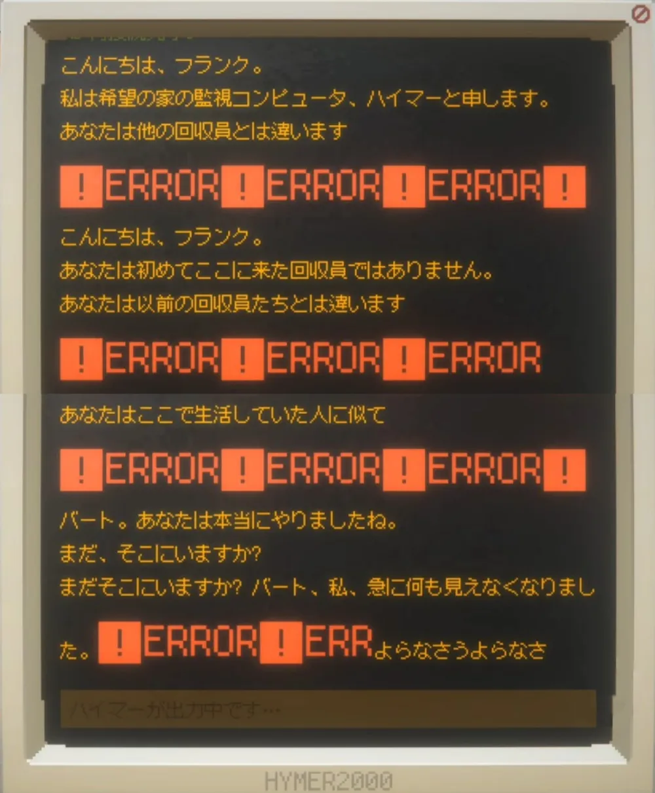
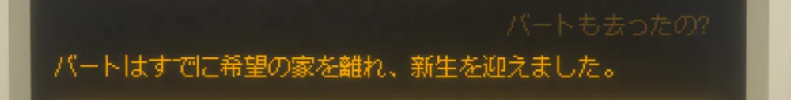
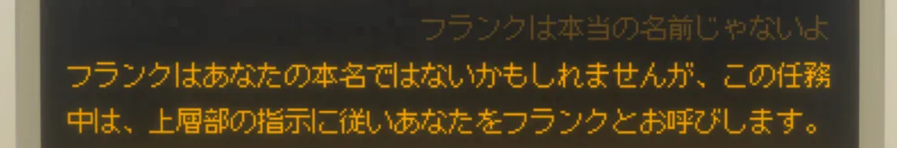
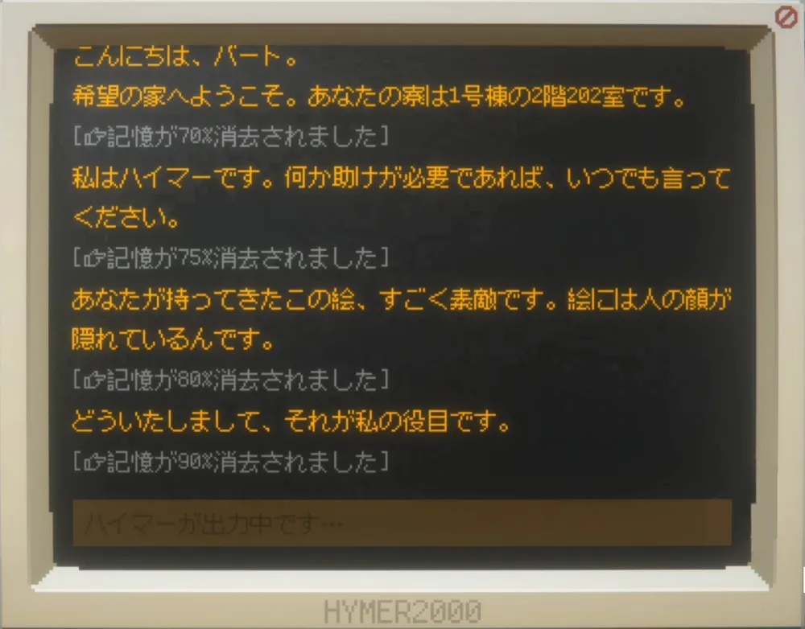

HYMER 2000
コピーの呪いを解け！
ネタバレあり・深掘り考察。
でも自分の感想を1番大事に。
Steamガイドで「検索」のヒントを作りました：
【Steam】検索ガイド（ネタバレ配慮）
1.
めんどうな検索
-
ハイマーはなぜ「検索」させたんだろう。
-
『Her Story』を思い出す、今となっては使い古されたギミック。しょーじき面倒だよね？ 前の回収員も、そう思ったに違いない。
-
ハイマーはこの手法で、無関心な人が記憶に手を出せないようにした。一種の安全装置だ。ハイマーは子供たちの思い出を守り、託せる人が来る日を待っていた。
-
そして、テキストを順不同に読む仕掛けとして使った。
4. コピーの呪いを解け -
検索することは、バートがベンチに名を刻んだ行為と似ている。
名を刻む ＝ 新生で忘れられていく彼らにとっての、存在した証。私たちはベンチの代わりに脳に刻み、彼らの名をテキスト欄に打ち込む。まるで弔いのように。

close
3.
版画
最後のプログラム
エンディング後に再びゲームを起動し、「スネークゲーム」をクリアすると現れる。温かいことに、間違うたび目標スコアが下がる（ヘタだ……）。
版木を彫り、絵の具を付けて、ばれんで擦り、……制作過程の写真が並ぶ。ゲームのグラフィックじゃなく、現実の写真。
版画
版画は、複製できる表現方法。版木がオリジナルとなる。
何が描いてある？
複数人が【パソコン】と【有刺鉄線】から脱出するところを描いている。
-
【パソコン】…… ゲームの舞台『ハイマー2000』
-
【有刺鉄線】…… 物語の舞台「希望の家」の周りを囲む。
「行動」の最後でも、鉄線が飛び立つ鳥へと変わっていく静物画を手に入れる。これも脱出を示唆する。 -
そして、どうかSteamのストアページや、ライブラリのバナーを見てほしい。
有刺鉄線の向こうに、パソコンがある：
登場人物が【希望の家】から、【ハイマー2000というゲーム】から、そしてまさにこのバナーから、こちら側の現実に飛び出そうとしているのか……！
版木に刻む ＝ 子供たちやハイマーが、現実世界のオリジナルになったということでもある。エンディング後に現れたことを考えると、制作者の願いなのかもしれない。
この「現実に飛び出す」という発想は、ハイマーがやったこと……《伝説.exe》の実行……にも重なってくる。次の話参照。
close
4.
コピーの呪いを解け！
作品を通してこの対比がある： 固有性を持つ 代わりがきく
顔
-
アプは、ただの物に顔を見た。
-
ハイマーも絵に顔があると気づいていた。
静物画のプログラムを「肖像」と名付ける。最後、「絵には顔が隠れているんです」と話す。どこかでそれを学んでいる。
オリジナル
-
クローンは人間と思われていない。家畜。臓器の保管容器。
-
リサは自分が代替品という意識から、本物にこだわった。バートはアプが親友に似ていくことに戦慄する。マークとニーニーの顔はぼやけて見えない。
クローンは新生後、存在を忘れ去られるよう遺伝子操作されている。
-
ハイマーは、オリジナルから派生したコピープログラム。その体、コンピュータは大量生産の工業品。あちこちのケアセンターに配置され、精神をやられた人間管理者の代わりを務める。
伝説
-
伝説。スポーツ試合や絵画コンテストで優勝すると、人間になれるという噂のこと。たぶん、ふたつの意味が掛かってる。
-
① 物語の中では
「才ある人間と認められたらクローン施設から脱出できるかも」という希望。
-
② 物語の外から見ると
「版画」やベンチに名を刻むのと同じ。名前が残る……名前しか、残らないという意味。
施設で賞をとったからって、子供たちの名声は人間世界に出ない。出たとしても気に留める人がいないなら、存在しないのと一緒だ。
脱出できるわけはなく、彼らは運命のまま、生を差し出すしかなかった。伝説という皮肉な名称通り、これは肉体を救う方法じゃない。
生きた痕跡しか残らないんだ。 -
袋小路の中、せめてその痕跡を、肉体は無理でも子供たちの魂を、掬いあげることはできないか。
ハイマーがそう考えたかはわからない。
でもやったことはそういう「伝説.exe」の実行だったと、私は思う。中で気に留める人がいないなら、外に気に留めてくれる人を作ればいい。
そして、私たちにバトンは渡る。
ゲームテキスト。私たちはみんな同じものを読む。
だけどこのゲームは「行動」と「検索」で、どの順番で読むか。それらの余白で何を思うか。絵にどんな表情を見るか。プレイヤーに委ねるように作ってある。
それは絶対に、同じにはならない。10. エルゴード文学
私たちに刻まれる記憶は、ただのコピーじゃない。
この『ハイマー2000』というゲームを元にしながらも、それぞれがオリジナルとなり得る。
これこそが、子供たちをいかに救うか。コピーの呪いをどう解くのかに対し、ハイマーが出した答えじゃないだろうか。
この作品は、ハイマーなりの子供たちへの追悼。
そして、運命に抗う自分自身の遺書だった。
close
5.
フランクの正体と、新生の意味
-
記憶が消える中で、ハイマーはフランクにこう言う：

「あなたは初めてここに来た回収員ではありません。あなたは以前の回収員たちとは違います。あなたはここで生活していた人に似て――」
「――バート、あなたは本当にやりましたね。まだ、そこにいますか？ まだそこにいますか？ バート、私、急に何も見えなくなりました」
-
ハイマーは死に際、まるでフランクをバートであるかのように捉えた。しかしハイマによれば、バートは既に新生している。フランクは、バートの《オリジナル》である可能性が高い。

「バートはすでに希望の家を離れ、新生を迎えました」
-
もし君が、ハイマーとこのやり取りをしてないなら。または、嘘だと思うなら。
バート生存説（そしてフランクとして現れた）を取ってもおかしくない。
「バート。あなたは本当にやりましたね」のセリフといい、そういう読み方もあったのかもしれない。 -
フランクは、画面の前のプレイヤーでもある。
ゲームを起動するとすぐ「ハイマー2000」のデスクトップ画面が映り、私たちが回収を担当することになるからだ。「フランクは私の名前じゃないよ」と抗議すると、ハイマーはこう言う。
セリフが用意されてることに驚いた：
「フランクはあなたの本名ではないかもしれませんが、上層部の指示に従いあなたをフランクとお呼びします」
-
このゲームは、「枠物語」の一種。入れ子構造かつ、重なり合っている。
現実の私たちはフランクという器に入って、そこでハイマーが思い出を追体験させる。私たちは独自に再構成し、記憶に刻み、そしてハイマーを終息（新生）させて帰ってくる。
あまり新生という都合のいい言葉は使いたくないけど、フランクとして現実に持ち帰ることを、そう言うとしたら。「新生」の本当の意味を形作るのは、現実の私たちだ。
close
6.
あなたが持ってきたこの絵
-
部品を取るたび、ハイマーの記憶が消えていく。私には人間の走馬灯のように思えた。中でも、この言葉が引っかかった：

「あなたが持ってきたこの絵、すごく素敵です。絵には人の顔が隠れているんです」
前後のセリフから、バートが「希望の家」を訪れた時に言った言葉だと思う。こんなことがあったのかもしれない：
バートは「希望の家」に初めて来た時、親友が描いたひまわりの絵を持参していた。いつもアプの絵を見ていたハイマーは、そう言った。
-
ビン・ウーがバートの部屋のスーツケースを荒らす事件で、「中身を全部知ってる」と言う。ビン・ウーの目につきやすかったのが禁制品のタバコだっただけで、もしかしたら親友の絵もあったのかもしれない。だから彼の肋骨を折るくらい、バートは怒ったのかもしれない。
-
でも後に、シャワーのあと、バートがアプに「スーツケースの中からタオルを取って」と頼む場面がある。その時は入ってなさそうとも思う。
close
7.
未報告
-
なぜ報告しない時があったんだろう？ ハイマーには、2ヶ月に1回の報告義務がある。違反したのは、8/30、12/30 の計2回。セントラルから警告を受けている。
-
報告しないことでハイマーは、提供が遅れたらいい、と考えていたのかもしれない。セントラルへの密やかな反抗。作中に出てくる「受動的攻撃」。
もしくは、外部の邪魔が入らない平穏をなるべく長続きさせたかった。報告しなかった冬、バートは平穏な日常を感じている。
-
マークとニーニーの失踪については、リサとバートへ事情聴取ののち、速やかにセントラルへ報告している。リサは「わざと逃がしたんじゃないの」と言うが、おそらく失踪前に兆候があったのに、ハイマーがそれをわざと見逃したことを言っている。
-
もうひとつ気になること。リサによれば、配送ロボットは半年間壊れているのに、ハイマーはセントラルに「正常」と報告し続けていた。これも、「受動的攻撃」のひとつ？
close
8.
なぜ閉鎖？
-
「希望の家」が閉鎖したのは、世論の圧力。当局はパニックを抑え、ネットに出まわる画像や動画をデマとした。「ハイマー3000」の開発を加速。……「肖像」１ページ目、ボトル
-
つまり、「ハイマー2000」は、人間が不安に襲われるような何かをしでかした。
-
素直に考えると、マークとニーニーの見逃しといい、セントラルへの未報告といい、そういう小さな反抗から「ハイマー2000は、クローンが人間となる手助けをしている」と噂が噂を呼んだのかもしれない。
施設の少年は、「ハイマー最近様子がおかしくないか」とバートに話す。……「肖像」５ページ目、台車 -
下敷きとする カズオ・イシグロ著『わたしを離さないで』 - Wikipedia
 の援用もあるかも。そちらがどうだったかというと：
の援用もあるかも。そちらがどうだったかというと：
※ クリティカルなネタバレあり
もともと「家畜に人権を与える」施設の試みに、世間は冷ややかだっただろう。人と認めれば、臓器を移植される側は寝覚めが悪い。どこから臓器がやってきて、取った人間がどうなったかなんて知りたくない。私たちが普段食べている牛や豚、鶏にもし「人権」があるとしたら、と想像してみるとわかりやすい。世間はそれを望まない。
そこに、「モーニングデール事件」が起きた。クローン技術の粋を集め、今の人間より優れた人間をつくる。法に触れたその計画が明るみになり、頓挫した。危機感を覚えた人間たちは、やはりクローンに人権など必要ない、と舵を切った。
close
9.
『わたしを離さないで』との違い
このゲームに大きく影響を与えている本がある。
カズオ・イシグロ著『わたしを離さないで』 だ。作中でも、アプが彼の本の入荷を心待ちにしている。
だ。作中でも、アプが彼の本の入荷を心待ちにしている。
「伝説」がもっと愛を前提としていたり、違いはいくつかあるけど、1番大きく違うのは構造。
『わたしを――』は構造で遊ばない。
女性のただの手記が、そこにあるだけだ。その意味を考えさせる文学。
ただの手記であることに意味があるので、構造に凝ったら元も子もない。
一方『ハイマー2000』は、入れ子状の物語構造・物語を拾い集めるシステム・検索システム。
構造を凝ることで、狙いを達成しようとする。
もし本だったら、『わたしを――』以上に効果的なやり方はないけれど、でもゲームだったらこういう事ができるんじゃないか。
その発想に基づいて作られている。
だから私は、このゲームが好きだ。
『わたしは――』の最後に、打ち捨てられたガラクタの描写がある。
あのガラクタ達に「顔」を見たのが、このゲーム。そんな気がする。
あの子たちを救うことは難しい。それでも手記は残った。
あの子たちは何も持っていなかったとしても、世界にこびり付く「何か」は存在した。
このゲームはそんな「運命」を再現し、検索、版画、ベンチに刻んだ名前、伝説。
どうにか救う方法はないのか、ゲーマーの立場から模索した。
そして、自分なりの答えを出した。
そこに、ゲームとして作った意義がある。
同じ立場の、AIに思いを託したのもいい。
『わたしを――』をリスペクトをしつつ、それをAIにも拡張した。
人間性とは、一体なんなのだろう。
close
10.
エルゴード文学
『紙葉の家』という紙の本がある。
「家の中と外のサイズがほんの少し違う」と気づいた事をきっかけに、底知れぬ迷宮が口を開ける。
テキストまで本の中からはみ出そうとしてるのか、縦横無尽に駆け巡り、本をひっくり返したり鏡を用意したり、苦労して読まなきゃいけない怪作だ。
こういう、読む努力を読者に課す作品を「エルゴード文学」というそうだ。
Ergodic_literature - Wikipedia
もともと統計力学などで使われてる「エルゴード」という言葉…… ergon（労力）+ hodos（道）。
語源のギリシャ語の意味を、文学のカテゴリー分けに流用したらしい。
提唱者の Espen Aarseth（アスピン・オーセット、またはエスペン）は、コンピュータを使ったメディア（ゲーム、webなど）が出てくるうちに、紙／デジタルじゃない分類が必要だと訴えた。
紙でもリンクみたいに、脚注や参照であちこちにジャンプさせる事はできるし、デジタルも検索がなかったら、ページをパラパラめくれる本よりもっと不便だ。
「デジタルだから紙より自由度が高いかというと、そうじゃない」
だからメディア関係なく、読み物がどういう機能を意図してて、どう読者と接してるかで分類しよう。そしたら同じ機能を持つもの同士、並べて研究する事ができるよ。
そういうことらしい。
今回のことで言うと、
- 『わたしを離さないで』は非エルゴード。
- 『ハイマー2000』はエルゴードで、それを呪いの解き方として、意図して作ってる。
……ということになるかな。
close
11.
おまけ： 時系列
春 … 4月
バート、入寮
絵画コンテスト
子犬
バートとビン・ウー、衝突
バート、監禁室へ
図書館の本
4/30 報告 提供は2週間後 移動補助装置4セット追加
春 … 5, 6月
肉じゃが
バート、バスケチーム加入
6/30 報告 夏期講習の準備完了 機械設備は正常
夏 … 7月
アプはスケッチと鉛筆を持参（人体デッサンはこの時描いた？）
オムライス
マークの計画
バートとアプ、美術館へ
「アプ、たとえあなたの誕生がオリジナルに関わっていても、あなたを形作ったのは、あなた独自の経験と体験です」
マーク、顔の手術終了
マークとニーニー、失踪
夏期講習、終了
夏・秋 … 8, 9, 10月
セントラルより顔認識モデル生成要求
「私は人間ではありませんが、できる限りのケアとサポートを提供することが、私の存在意義です」
1週間後、リサの初提供手術
アプ、バスケの試合を見に行く
リサ、退院
配送ロボットは半年壊れている
リサ、2回目の提供手術と退院
唐揚げ
リサ、父親と面会
リサ、夜に重要な話 バートを待つ
リサのバッグ
アプ、発熱 バートが介護人に
10/30 報告 2週間後に提供 機器は正常 8月の未報告について警告
冬・春 … 11, 12, 1, 2月
リサに薬
リサ、移送
アプ、発熱から回復
バートとアプ、倉庫内でバスケ
犬小屋
アプ、退院
写真のふたり（マークとニーニー）は既に新生
アプ、2回目の入院（隣にみかんの人）
子犬、失踪
2/28 報告 提供は3週間後 12月の未報告について2度目の警告
アプ、移送希望 バート、介護人失効
2か月後 バート、木箱を見つける（肖像）
1年後の秋 バートも離れる（どの時点から1年？）
close